Lightgator：一种通过压缩采集实现多功能图像处理的光学近传感器加速器
该论文针对边缘视觉应用中传统图像传感器超过 96% 功耗耗于像素转换与保留、且现有电子 PIS/PNS 与 MR 光学加速器存在 ADC/DAC 功耗高、MR 调谐开销大、对 Pooling 等层支持受限且缺乏多卷积核硬件映射等问题，提出光学近传感器加速器 Lightgator（正文拼写为 Lightator）。方法上以 15 个比较器构成的 CRC 取代像素 ADC 实现 ADC-less 读出；经 Directly-Modulated VCSEL Array 将激活值直接调制为光强、MR 仅承载权重，从而消除激活参数调谐与相应 DAC；All-in-One Convolver 逐层处理 DNN，Compressive Acquisitor 在单周期内完成 RGB 转灰度与平均池化压缩，并给出 3×3/5×5/7×7 卷积核与全连接层的硬件映射及 [4:4]/[3:4]/[2:4] 混合精度方案。基于器件-电路-架构-应用联合仿真框架，最优配置达 84.4 Kilo FPS/W，功耗较现有光学加速器与 GPU 基线平均降低约 24× 与 73×。该工作属硅光子 AI 加速器方向，与本团队内存/互连 IP 的架构、RTL 与验证技术栈无直接交集。
IoT 视觉传感器需将所有像素转换为固定位宽数字值，超过 96% 的功耗来自转换与数据保留；现有电子 PIS/PNS 设计存在外设与 ADC/DAC 功耗高、面积与功耗开销大、中间数据需额外存储、电子系统速度受限等问题；现有 MR 光学加速器则存在激活参数调谐 MR 的功耗开销、ADC/DAC 过度使用、对 Pooling 等多种 DNN 层支持有限且无压缩支持、缺乏支持多种卷积核尺寸的硬件映射方法。论文目标是构建不依赖云端、可在边缘端完整处理 MLP/CNN 各层的低功耗光学近传感器加速器。
提出 Lightator 光学 PNS 加速器：(1) ADC-Less Imager：256×256 全局快门 RGB 传感器，每像素用含 15 个电压比较器的 Comparator-based pixel Reading Circuit (CRC) 直接输出 4-bit 数据，取代 ADC；(2) Directly-Modulated VCSEL Array (DMVA)：由 CRC 或上一层数字输出经 Selector 控制 16 个并联驱动晶体管，把激活值直接调制为 VCSEL 光强，MR 仅承载权重，省去激活调谐功耗与相应 DAC；(3) Optical Core：MR 分 bank 组成 MVM banks（96 banks、8×12 阵列、每 bank 54 个 MR、共 5184 个 MR，单周期最多 5184 次 MAC），BPD 完成臂内累加，Summation 部分合并分段部分和；(4) Compressive Acquisitor (CA)：通过在 MR 上映射压缩权重系数，单周期完成 RGB 转灰度与可配置平均池化；(5) 硬件映射方法学支持 3×3/5×5/7×7 卷积核与全连接层分段 MAC；(6) 支持 [4:4]/[3:4]/[2:4] 逐层混合精度与量化感知训练，激活函数（Sign/ReLU/tanh）在电子域完成。
Lightator-MX [4:4][3:4] 提供最佳性能-质量组合，达 84.4 Kilo FPS/W
功耗较 GPU 基线（NVIDIA RTX 3060Ti, [32:32]）平均降低约 73×，较 HolyLight [4:4] 降低 24.68×，较 CrossLight [4:4] 降低 30.9×
VGG9/CIFAR100 上 Lightator [3:4] 功耗为 2.71 W，而最佳低功耗对比设计 HolyLight 需 66.9 W 或更高
Lightator [3:4] 相比 [4:4] 以 3.17% 精度下降换取约 2× 功耗节省；Lightator-MX [4:4][3:4] 相比 [3:4] 增加约 0.9 W 功耗，CIFAR100 精度提升 2.33%
吞吐每瓦方面 Lightator [3:4] 达 117.65 kilo FPS/W，较 LightBulb 最佳报告值提升约 2×
AlexNet 上执行时间较 Eyeriss、YodaNN、AppCip、ENVISION 分别降低 10.7×、20.4×、18.1×、8.8×，VGG16 呈类似趋势
CA 压缩使 VGG9 第一层功耗降低 42.2%；所有层中 DAC 占总功耗 85% 以上
降低权重位宽平均带来 2.4× 功效提升
MVM banks 共容纳 5184 个 MR，OC 单个工作周期最多执行 5184 次 MAC
与先前光学加速器（LightBulb、Robin、CrossLight、HolyLight、HQNNA 等）相比：(1) 首次仅将权重映射到 MR，激活值经 VCSEL 驱动电流直接调制到输入光，消除激活参数调谐 MR 的功耗及相应 DAC；(2) 用比较器读出电路 CRC 取代像素 ADC；(3) 在光学域单周期完成 RGB 转灰度与任意尺寸平均池化的压缩采集；(4) 提出统一硬件映射机制支持 3×3/5×5/7×7 卷积核与全连接层，可在片上逐层处理完整 DNN 而不依赖云端；(5) 支持逐层混合精度以调节功耗-精度权衡。
相关度级别：low
命中能力域：无明显对应
理由：论文核心是硅光子（Microring Resonator、VCSEL）近传感器 AI 加速器的器件-电路-架构协同设计与评估，属于新兴光学计算方向。逐条对照团队能力域：非内存/互连 IP 架构（2.1），无可综合 RTL/低功耗实现/时序收敛流程（2.2、2.3），无 UVM/覆盖率等验证方法学（2.4），无形式验证与等效性检查（2.5），其自研架构模拟器属于性能建模而非仿真加速/Emulation/FPGA 原型（2.6），其评估框架亦非验证流程自动化或 LLM 辅助验证（2.7）。与上游 catalog 标注的'无明显对应'一致。唯一弱相关点是面向 PPA 的架构权衡与混合精度功耗-精度折衷思路，但载体是光子器件与视觉 DNN，无法迁移到 LPDDR/HBM/UCIe IP 的实际工程。
建议动作：暂不相关
随着集成光子器件（例如高能效且可调谐的微环谐振器（MR）和马赫-曾德尔（Mach-Zehnder）调制器）的进一步发展，与CMOS工艺兼容的硅光子技术为高速且高能效的光学深度神经网络（DNN）加速器提供了一种有望替代数字电子学的方案，这一点已得到多项研究[12, 14, 16, 19, 27]的证实，但此类MR器件的边缘部署尚未得到充分探索。此外，即便是现有的基于MR的加速器也面临着若干本工作旨在解决的挑战，包括：( 𝑖 ) 加速器中用于激活参数的MR被过度使用且存在调谐功耗开销[16, 19]；( 𝑖𝑖 ) 过度使用模数转换器（ADC）和数模转换器（DAC）所导致的高功耗与面积开销[12, 14, 17]；( 𝑖𝑖𝑖 ) 在处理各种DNN层（池化（Pooling）等）方面灵活性有限，且不支持压缩；以及( 𝑖𝑣 ) 缺乏可支持DNN中各种卷积核尺寸的相应硬件映射方法。本工作的主要贡献如下：(1) 我们提出了一种高性能
本文提出了一种面向视觉应用的高性能、高能效光学近传感器加速器，名为 Lightator。借助光子器件所提供的极具前景的高效率，Lightator 首次实现了对输入帧的创新性压缩采集与细粒度卷积运算，从而支持在边缘端进行低功耗且多样化的图像处理。这将显著降低既有以云为中心的架构以及近期设计的边缘加速器中转换、传输与处理环节的能耗和延迟。我们的器件到架构仿真结果表明，在保持良好精度的同时，Lightator 达到了 84.4 Kilo FPS/W 的性能，与现有光子加速器和 GPU 基线相比，功耗平均分别降低 ∼ 24 倍和 73 倍。
Mehrdad Morsali、Brendan Reidy、Deniz Najafi、Sepehr Tabrizchi、Mohsen Imani、Mahdi Nikdast、Arman Roohi、Ramtin Zand 和 Shaahin Angizi。2024。Lightator：一种采用压缩采集、支持多样化图像处理的近传感器光学加速器。收录于第 61 届 ACM/IEEE 设计自动化会议（DAC '24），2024 年 6 月 23 日至 27 日，美国加利福尼亚州旧金山。ACM，美国纽约州纽约，6 页。https://doi.org/10.1145/3649329. 3656261
与电子加速器相比，基于硅光子的加速器能够提供显著更高的工作带宽，同时解决了扇入/扇出问题，这使其成为加速深度神经网络（DNN）和机器视觉应用的有力候选 [12, 16, 18, 27]。这类加速器大致可分为两种主要设计：相干架构与非相干架构。在相干类别中，运算采用单一波长，权重/激活参数被编码到光信号的电场幅度、相位或偏振中 [26]。相反，非相干设计 [16, 19] 采用多个波长，每个波长都能够并发地执行计算。在非相干架构中，DNN 的权重和输入参数被烙印在信号的幅度上 [16, 19]。为了操控各个波长，可以采用微环谐振器（MR）——如图 1 所示——其中心频率可以被主动调节（即通过采用诸如微加热器或 PIN 结之类的调谐机制），从而选择性地与特定波长相互作用。通过适当地调谐 MR，可以对特定波长的入射光强度进行加权。在非相干设计 [16, 19] 中，MR 作为基本组件保存着乘累加（Multiply-and-ACcumulate, MAC）运算中所需使用的权重和激活值。在光子 MAC 运算过程中，输入光的透射谱可以与 MR 上设定的值相乘（通过施加调谐信号，见图 1）。该值通过调谐 MR 的谐振波长来设定，该谐振波长可与输入信号的波长部分重叠，从而将参数烙印到输入信号的透射谱中（见图 1）。谐振波长由 𝜆 𝑟𝑒𝑠 = 𝑛 𝑒𝑓 𝑓 × 𝐿 𝑚 给出，其中 𝑛 𝑒𝑓 𝑓 是 MR 的有效折射率，𝐿 和 𝑚 分别表示 MR 的周长和谐振模式的阶数 [4]。
先前的研究已探索了通过应用相干与非相干光子学原理来加速深度神经网络（DNN）。LightBulb [27] 作为一种全二值化的卷积神经网络（CNN）加速器被提出，它以光子XNOR和popcount运算取代了浮点乘累加（MAC）运算。尽管降低了计算延迟和存储占用，LightBulb中过多的模数转换器（ADC）却增加了设计的功耗。Robin [19] 还提出了一种基于MR的二值CNN加速器，在器件、电路和架构三个层面对电光元件进行了优化。尽管通过电路级的调谐增强来降低推理延迟，但调谐过程所需的大量MR以及随之而来的数模转换器（DAC）降低了设计的效率。CrossLight [16] 作为一种4位权重-输入CNN加速器，需要对MR中的激活值和权重值均进行调谐，并且与先前设计类似，仅支持卷积层处理。文献 [17] 中的设计提出了一种支持混合精度权重-输入的CNN加速器。这一非相干硅光子加速器同时利用了波分复用（WDM）和时分复用（TDM）。然而，持续使用DAC和ADC作为层间转换器是一个值得关注的问题，其增加了整个架构的总体面积和功耗。HolyLight [12] 作为一种纳米光子加速器，通过使用基于MR的加法器和移位器替代ADC，提升了CNN的推理吞吐量。尽管如此，对激活值和权重值均过度使用MR不仅增加了总体延迟和功耗，还降低了其用于各种DNN的灵活性。
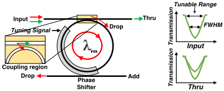
我们提出 Lightator 作为一种高性能、高能效且多功能的 PNS 加速器，具备压缩采集能力，面向边缘端的实时图像处理。开发此类架构的关键思想是首次构建一个独立的光学框架（不依赖片外处理器 [3, 20, 23]），以低位宽方式对多层感知机（MLP）和 CNN 中的所有层进行压缩与处理，从而灵活调节功耗与精度之间的权衡。在多节点 IoT 结构中，由节点 i 所表示的 Lightator 高层操作流程如图 2 所示。该设计由一个 m × n 传感器阵列和一个超高速光学核心（Optical Core, OC）组成，二者通过直接调制 VCSEL 阵列（Directly-Modulated VCSEL Array, DMVA）进行接口连接。在步骤 1 中，输入帧 𝑓 𝑖 由全局快门 RGB 图像传感器捕获，并通过 DMVA 单元以创新的无 ADC 方式进行处理。在步骤 2 中，所得到的波导可以选择性地馈入 OC 的压缩采集器（Compressive Acquisitor, CA）单元，该单元通过跨通道均值池化和步幅卷积来降低空间维度，从而生成 𝑓 𝑗。根据工作负载和需求，该步骤可以轻松跳过。在步骤 3 中，一体化卷积器（All-in-One Convolver, AOC）对 DNN 层进行处理，并在步骤 4 中传输结果 𝑓 𝑜，供 DMVA 用作下一层的输入。因此，步骤 3 ↔ 4 通过一种复用 DMVA 的新颖硬件机制实现逐层 DNN 处理，免除了传统上消耗面积/功耗的激活存储体（activation banks）[16, 19]，并为发射器 5 准备好结果。
Lightator 的详细架构如图 3 所示。传感器阵列以无 ADC 方式经由基于比较器的像素读出电路（Comparator-based pixel Reading Circuit, CRC）连接至 VCSEL 驱动电路。
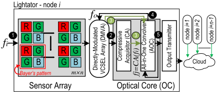
VCSEL driver drives an array of VCSELs in the OC. The MatrixVector Multiplication (MVM) banks and the subsequent summation section handle the execution of MAC operations across different network layers. The primary advantage of Lightator processing core is that it only requires mapping weight data onto MRs, while activation values are directly modulated onto the core's input light through VCSELs by adjusting their driving currents, unlike prior designs discussed in the previous section. This configuration allows the entire capacity of the OC to be dedicated to weight values rather than activation, resulting in substantial energy savings, as driving VCSELs consumes significantly less power compared to tuning MRs [16, 19]. Moreover, additional energy efficiency is achieved as the VCSEL driver directly takes the digital output of the previous layer, eliminating the need for conversion to analog MR tuning signals using DACs. The electronic component on top consists of the activation functions supporting 𝑆𝑖𝑔𝑛 , 𝑅𝑒𝐿𝑈 , and 𝑡𝑎𝑛ℎ , as well as the storage for the weights and the activated feature maps from previous layers. A more detailed explanation of the various components of Lightator architecture is provided in the following.
ADC-Less Imager. A256 × 256 global-shutter RGB image sensor has been considered in the presented design. Every pixel's PhotoDiode (PD) generates a photo-current with respect to the external light intensity which in turn leads to a voltage drop ( 𝑉 𝑃𝐷 ). By utilizing the CRC, the usage of power-hungry and area-consuming ADCs is resolved. The CRC is responsible for reading the output of the pixel and so the analog output of pixels will be converted to 4-bit digital data.
Directly-Modulated VCSEL Array. DMVA is developed to convert its electrical input to light with a specific wavelength and intensity. Instead of generating raw light, the intensity of light generated by VCSELs is correlated with the input data of the VCSEL driver, and the wavelength is correlated with the VCSEL structure itself. The input of the VCSEL driver comes from either the pixel
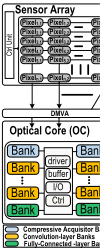
Controller
CMD
Timing
Decoder Ctrl
CRC
Selector VCSEL Driver
Activation
Function
MVM Banks Summation
splitter
N
VCSELs
Pixel1,n
Pixel2,n
Pixel3,n
Pixel4,n
Pixel5,n
Pixeln,n Memory
(In/Out Buffer)
4-bit
OC
Memory
(Weights)
array or the output of the previous layer which is processed by the OC. This input is modulated to a specific wavelength and fed to OC as activation to participate in the MAC operation of the next DNN layer. The DMVA consists of three components as shown in Fig. 4: CRC, Selector, and VCSEL driver. Each CRC unit (Fig. 4(a)) contains 15 voltage comparators and is utilized instead of ADCs to read the pixel's output voltage. CRC receives pixel's 𝑉 𝑃𝐷 and compares it with 15 reference voltages ( 𝑉 𝑅𝑒𝑓 ) which are spanned in the range of pixel output voltage. According to the value of the 𝑉 𝑃𝐷 , the output of the comparators ( 𝑉 𝑆 ) will be either '0' or '1' and later these binary voltages will be used to control the VCSEL's driving transistors. Fig. 4(d), depicts a sample waveform of the pixel's output voltage and comparator outputs that are used for controlling the driving current of the VCSELs. According to Fig. 4(d), by increasing the 𝑉 𝑃𝐷 , more number of comparators outputs ( 𝑉 𝑆 ) will be '1' leading larger number of ON transistors in the VCSEL driver circuit.
A selector circuit is used to select the input-controlling voltages of the VCSEL driver as depicted in Fig. 4(b). During processing the first layer of the network, the selector connects the output of the pixel array to VCSEL and later when the rest of the layers are getting processed, the selector connects the output of previous network layers as the input of VCESL driver to be modulated and fed as the activation of next layers. The VCSEL driver circuit (Fig. 4(c)) comprises 16 parallel driving transistors that encode 4-bit data. Depending on input signals from either the CRC ( 𝑉 𝑆 ) or the output of the previous layer ( 𝑉 𝐵 ) coming from the selector in Fig. 4(b), the number of transistors supplying VCSEL's driving current will be adjusted. When pixel voltage is large or the digital input from the previous layer is greater, more driving transistors will be activated, leading to an increase in the light intensity generated by VCSEL.
Optical Core. OC's MR-based computational units are virtually divided into multiple banks as color-coded in Fig. 3 including compressive acquisitor, convolutional layer, and fully-connected layer to execute various DNNs all through adjusting weight parameters and MVM operation if required.
1. All-in-One Convolver (AOC): The OC comprises three main components as depicted in Fig. 3, VCSELs, MVM banks, and the
summation section. VCSELs generate light waves that represent
activation values, with the intensity of the light corresponding
to these values. MVM banks contain MRs that are mapped with
weight values and partitioned in the arms. The MRs adjust the
intensity of incoming light based on their mapped weight values,
affecting only light with the same wavelength as the MR. This
VRef 15VPD
VRef 2
VRef 1
VB0
VBias
VCSEL
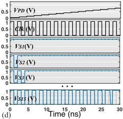
V2
VB3
该过程涉及将激活值的光强度与存储在如图5所示的MR中的权重相乘。为了执行乘累加（MAC）操作，一个包含所有所需激活值（这些激活值被调制在不同的波长上）的光信号会通过容纳着已映射权重的MR的臂。当光通过该臂时，每个MR都会影响与该特定MR相对应的波长处的光强度。每个臂末端的平衡光电探测器（BPD）负责完成累加，使得MAC操作能够在矩阵-向量乘法（MVM）阵列的每个臂中执行。
在一个臂内可执行的乘法数量等于该臂中MR的数量。在处理全连接层或具有较大卷积核尺寸、需要对大量激活值和权重执行MAC操作的卷积层的情况下，乘法的数量会超出臂的容量。在这些情况下，大量的MAC操作被划分为能够容纳在一个臂内的较小片段。随后，这些分段后的MAC结果在求和部分中进行求和，以获得最终的MAC结果。为了便于处理多个层并实现在Lightator平台上对整个神经网络的处理，除光学核心外，还需要一个电子部分。该部分对于存储各层的权重值必不可少，因为受核心物理限制的约束，一个网络的所有权重无法同时映射到光学核心上。因此，权重值被存储在一个专用存储器中，然后在处理每一层时映射到各个MR上。另一个存储器用于保存网络前一层的处理后输出，该输出随后作为激活值馈送到下一层。此外，在每层的末端实现激活函数时，在电域中实现比在光域中更为高效[16, 19]，因此，电子部分负责执行激活函数。控制器单元控制该平台的流程与时序。
2. Compressive Acquisitor (CA): CA banks are dedicated to serving as a compression/pooling layer, where an RGB-to-grayscale conversion and/or configurable average pooling can be done all through adjusting MRs. We propose to conduct the compression in a single operational cycle by mapping proper compression weights to the OC banks and performing the corresponding MAC operation. The conversion from RGB to grayscale can be achieved by forming a weighted sum of the R, G, and B pixel values after CRC as 𝑃 𝐺𝑟𝑎𝑦𝑠𝑐𝑎𝑙𝑒 = ( 0 . 299 × 𝑃 𝑅 ) + ( 0 . 587 × 𝑃 𝐺 ) + ( 0 . 114 × 𝑃 𝐵 ) . And, as an example, the 2 × 2 average pooling layer containing 𝑃 1 to 𝑃 4 pixels can be formulated similar to a weighted sum as follows: 𝑃 𝐴𝑣𝑔 = ( 0 . 25 × 𝑃 1 ) + ( 0 . 25 × 𝑃 2 ) + ( 0 . 25 × 𝑃 3 ) + ( 0 . 25 × 𝑃 4 ) . Therefore, a nicely-compressed and gray-scale-converted input can be given by properly tuning the weight parameters as follows.
Where in 𝑃 𝑖 𝑗 , i is the pixel number identifier and j denotes the channel which can be R, G, or, B. By using the above method and mapping the coefficients of the resultant equation (1) in the OC's MR banks, RGB-to-grayscale conversion and average pooling of any size can be conducted simultaneously.
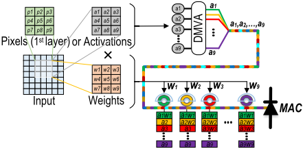
Methodology. The MVM banks within the OC are vital for processing various layers like compression, convolution, or fully connected layers, requiring respective weights assigned to MRs. In our setup, MRs are grouped in sets of 9 within each arm to efficiently handle 3 × 3 kernel strides, resulting in 96 banks organized into an 8 × 12 array, with each bank containing 54 MRs. Thus, the MVM banks collectively accommodate 5184 MRs, allowing a maximum of 5184 MAC operations per operational cycle of the OC. Fig. 6 depicts the bank configuration for MAC operations in a convolutional layer with 3 × 3, 5 × 5, and 7 × 7 kernel sizes, with summation sections located at the right end of each bank. As the configuration of OC is specified for 3 × 3 kernels, as depicted in Fig. 6(a), all of the MRs are allocated to be mapped with weight values enabling each arm to execute a stride. BPD performs the required summation, enabling direct transmission of the MAC result without using the summation component, which remains inactive (depicted in gray in Fig. 6(a)). This way, each bank can execute 6 strides. For 5 × 5 kernels, 25 weight values are mapped on MRs, with 3 arms per bank allocated for one stride. 27 MRs are available in 3 arms, thus, in each set of arms, 2 MRs remain unused and inactive, indicated by the gray shading in Fig. 6(b). Since each arm lacks summation capability for all multiplication elements, additional summation stages for partial sums are required, with the initial stage activated while the second stage remains inactive (grayed out). As illustrated in Fig. 6(b), in this case, each bank can perform 2 strides. For a 7 × 7 kernel size, a total of 49 MRs are necessary for weight mapping, leading to the entire bank being dedicated to a single stride. Nevertheless, 5 MRs per bank remain inactive and unused, shown in gray in Fig. 6(c). Through further processing involving two stages of the summation part, partial products are combined, allowing the final MAC results to be sent out. In the case of fully-connected layers, we segment the entire MAC operations into sets of 9 MACs, map their corresponding weights to arms, and subsequently aggregate the partial results using the summation part to derive the ultimate MAC result.
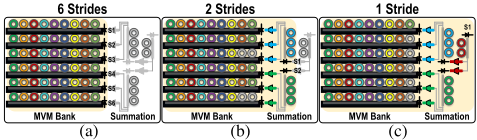
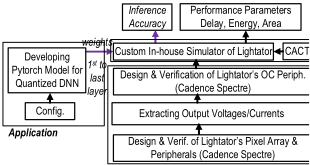
Circuit
Framework. As shown in Fig. 7, the assessment framework consists of device-, circuit-, architecture-, and application-level components. At the device level, we manufactured and fine-tuned the MR devices and obtained the circuit parameters for co-simulation with interface CMOS circuits in Cadence Spectre and SPICE. Progressing to the circuit level, we initially implement the pixel's array and peripheral circuitry using the 45nm NCSU Product Development Kit (PDK) library [1] in Cadence, from which we derive the output voltages and currents. Then we proceed to develop all Lightator's components excluding kernel banks (implemented in Cacti [22]) in Cadence Spectre. At the application level, we train PyTorch models w.r.t. the under-test DNN models and datasets and extract weight parameters. These parameters are then quantized and mapped into
the OC for adjusting MR elements. To preserve optimal accuracy post-precision reduction, we undertake an additional six epochs of training employing quantization-aware techniques. This ensures the model's robustness and performance integrity in the face of reduced precision. At the architecture level, we develop a custom in-house simulator for Lightator to work with the 1 𝑠𝑡 -to-last layer weight parameters and calculate both the execution time and power consumption required for the DNN models as well as inference accuracy. Moreover, it offers flexibility in terms of MVM array configuration and the selection of peripheral designs. We conduct experiments on Lightator considering various [Weight: Activation] configurations with several datasets, including MNIST evaluated on LeNET, and CIFAR10, and CIFAR100 on VGG9.
Power Consumption & Performance. Fig. 8 shows the layerwise breakdown of components of power consumption including ADCs, DACs, DMVA (with CRC, VCSELs, and drivers), Tuning circuitry (TUN), BPDs, and Misc. (Controller, etc.) for LeNET model mapped to Lightator. Lightator effortlessly implements all convolutional and pooling layers (indicated by 𝐿 𝑖 ) for three weight and activation [W:A] configurations of [4:4], [3:4], and [2:4]. Pooling layers are implemented within CA banks with pre-set weight coefficients. We observe that decreasing the bit-width of weight parameters for each layer results in power saving for the edge device, where on
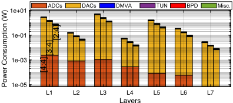
层 架构 MR 器件 制备与优化 器件 L1 L2 L3 L4 L5 L6 L7 1e-06 1e-04 平均
据报告，能效提升了 2.4 倍。这主要源于在处理 3 位和 2 位数据时，对 4 位 DAC 电路中与其额外位精度相关的部分实施电源门控。图 9 逐层描绘了 VGG9 模型各功耗组成部分的分布，特别聚焦于限于 [3:4] 的配置。作为概念验证，我们在将输入图像馈入模型之前，利用 CA bank 对其进行轻度压缩。这使得第一层的功耗降低了 42.2%。图 9 中的饼图还清晰展示了某一示例层的功耗细分情况。我们观察到，在所有层中 DAC 一致地占总功耗的 85% 以上，因为必须使用 DAC 将所有权重值转换为模拟输入以进行调谐。
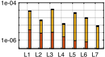
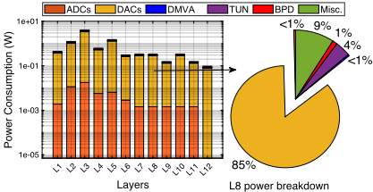
与光学加速器的比较。表 1 给出了所选的基于 MR 的光学加速器以及 Lightator 在各种 [W:A] 配置下与基线——NVIDIA Geforce RTX 3060Ti GPU——相比的综合仿真结果。受测的 DNN 加速器包括背景部分所讨论的 LightBulb [27]、HolyLight [12]、HQNNA [17]、Robin [19] 和 CrossLight [16]。为确保评估的无偏性，我们参照原始设计从零开始重新构建了这些设计，采用该评估框架和我们的自研仿真器，并在对所有加速器而言合理的面积约束（∼ 20-60 𝑚𝑚 2）下报告结果。我们的框架包含 96 个 bank，每个 bank 由 6 个臂组成，每个臂带有 9 个 MR。
| Designs &.[ W: A ] | Process node.(nm) | Max Power (W). | KFPS/W. | Accuracy (%).MNIST | Accuracy (%).CIFAR10 | Accuracy (%).CIFAR100 |
|---|---|---|---|---|---|---|
| baseline [32:32] § | 8 | 200 | - | 98.53 | 90.46 | 67.8 |
| LightBulb [1:1] [27] | 32 | 68.3 | 57.75 | 96.7 | - | - |
| HolyLight [4:4] [12] | 32 | 66.9 | 3.3 | 98.9 | 88.5 | - |
| HQNNA [17] | 45 | - | 34.6 | - | 89.68 | 61.95 |
| Robin [1:4] [19] | 45 | 106 | 46.5 | - | 62.5 | 45.6 |
| CrossLight [4:4] [16] | - ∗ | 84-390 | 10.78-52.59 | 92.6 | 78.85 | - |
| Lightator [4:4] | 45 | 5.28 | 61.61 | 98.12 | 88.87 | 64.22 |
| Lightator [3:4] | 45 | 2.71 | 117.65 | 98.05 | 86.3 | 61.04 |
| Lightator [2:4] | 45 | 1.46 | 188.24 | 93.95 | 70.55 | 41.4 |
| Lightator-MX [4:4][3:4] † ‡ | 45 | 3.64 | 84.4 | 97.85 | 85.65 | 63.37 |
| Lightator-MX [4:4][2:4] | 45 | 1.97 | 126.6 | 94.8 | 78.87 | 51.29 |
| Designs &.[ W: A ] | Process node.(nm) | Max Power (W). | KFPS/W. | Accuracy (%).MNIST | Accuracy (%).CIFAR10 | Accuracy (%).CIFAR100 |
§ NVIDIA Geforce RTX 3060Ti GPU。∗ 数据在论文中未报告/无法获得。† 采用混合精度方案的 Lightator，其中 L1[4:4] - L2:LN [3:4]。‡ 采用混合精度方案的 Lightator，其中 L1[4:4] - L2:LN [2:4]。
在此我们列出关键观察结果。（1）我们观察到，在运行 CIFAR100 的 VGG9 模型上，Lightator 的各变体相比同类设计展现出卓越的能效，例如 Lightator [3:4] 仅消耗 2.71 W，可由边缘设备的低功耗预算供给；然而，最好的低功耗加速器，即 HolyLight [12]，需要 66.9 W 或更高 [19]。如此显著的能效来自（𝑖）去除了由激活参数调谐的 MR，从而节省了 MR 所需的调谐功耗；以及（𝑖𝑖）减少了因大量使用 ADC 和 DAC 而导致的额外功耗与面积需求。（2）
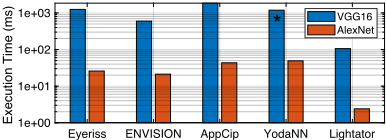
与电子加速器的比较。为了展示 Lightator 作为光学加速器所具备的内在并行性，我们进一步考察了其与四种知名的数字电子加速器相比的执行时间，这些加速器各自采用不同的并行技术和硬件映射方法，即运行 VGG16 和 AlexNet 的 Eyeriss [6]、YodaNN [2]、AppCip [20] 和 ENVISION [13]。Eyeriss 采用一种空间架构，利用行固定（row-stationary）数据流来最小化能耗。YodaNN 是一种针对二值权重卷积神经网络（CNN）优化的专用集成电路（ASIC）加速器，支持并行处理不同尺寸的滤波器。AppCip 作为一种传感器内处理（PIS）架构，实现了即时的 RGB 到灰度转换、高度并行的像素内模拟卷积以及低精度五值权重神经网络。ENVISION 利用子字并行 MAC，并对电压、频率和位精度缩放进行动态调整。图 10 中绘制的仿真结果表明，在两种模型上，光学加速器在处理深度神经网络（DNN）层方面均优于电子加速器。我们观察到，在 AlexNet 上，Lightator 相比 Eyeriss [6]、YodaNN [2]、AppCip [20] 和 ENVISION [13] 分别将执行时间缩短了 10.7×、20.4×、18.1× 和 8.8×。在 VGG16 模型上也可以观察到类似的趋势。
本文提出了一种面向视觉应用的高效光学近传感器加速器——Lightator。我们的设计采用创新的输入帧压缩采集与细粒度卷积运算，可在边缘端实现低功耗且多功能的图像处理。我们的结果表明，在精度可接受的前提下，Lightator 达到了 84.4 Kilo FPS/W 的性能，与近期的光子加速器和 GPU 基线相比，平均分别将功耗降低约 24 倍和 73 倍。